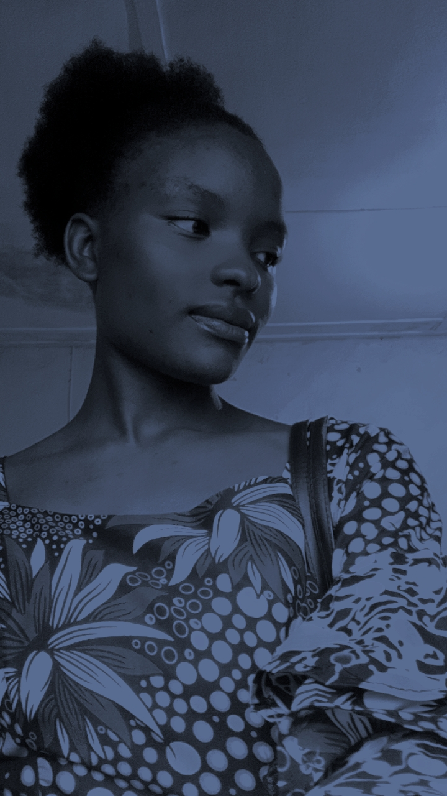

A propos de moi
Bonjour! je m'appelle gradie KAMUNG et je suis un etudiant dynamique et motive en informatique a l'UDBL. Passionne par le developpement web et l'intelligence artificielle, et le designe graphique, je suis constamment a la recherche de nouvelle opportunites d'apprentissage et de defis stimulants.
Au cours de mes etudes, j'ai devellope de solides competences en programmation. je suis une personne rigoureuse, creative et j'aime travailler en equipe pour atteindre des objectifs communs. Mon objectif est de contribuer a des projets innovant, trouver un stage, et maitriser le Framework Laraval.
Mes competences
| CATEGORIE | COMPETENCES | NIVEAU |
|---|---|---|
| Programmation | HTML, css, JavaScript, Python | Avance |
| Design | Figma, Photoshop (base) | Intermediaire |
| Luangues | Francais(natif), Anglais(fluide) | Avance |
| Outils | Git, VS Code, Suite Office | Avance |
| Soft Skills | Communicatiom, Resolution de problemes, Autonomie | Expert |